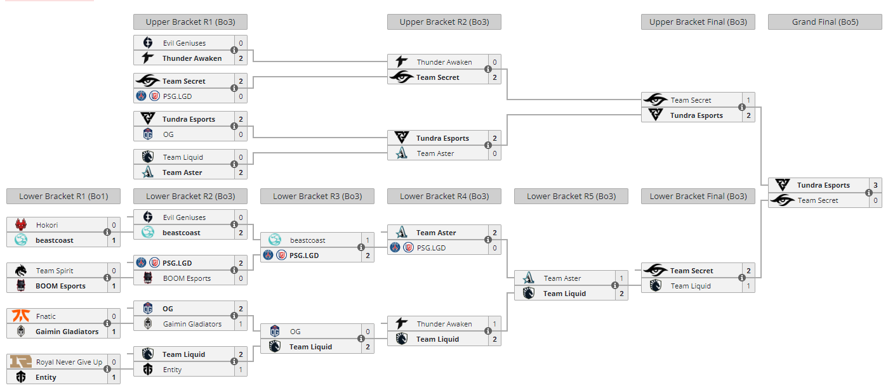

The International
The International souvent abrégé "TI" est le plus grand tournoi de DotA 2, il a lieu une fois par an et est le tournoi ayant le plus d'argent en jeu tout jeu confondu (La cagnotte de The International 2020 a dépassé les 40 millions de dollars)
20 équipes participent au tournoi après des phases de qualifications ardues mais seules 16 équipes pourront participer à l'évenement principal. En effet, les 20 équipes sont divisées en 2 groupes qui vont s'affonter pendant une semaine
et permettront de décider l'odre de rencontre des équipes lors de l'évenement principal mais également d'éliminer les 2 équipes ayant gagné le moins de matchs dans chacun des groupes.
Les 4 meilleures équipes de chaque groupe seront placées en Upper Bracket tandis que les 4 suivants seront en Lower Bracket. Une défaite en Upper Bracket fait tomber l'équipe en Lower Bracket tandis qu'une défaite en Lower Bracket élimine l'équipe.
Voici un aperçu de l'ordre des rencontres lors de l'édition de cette année 2022 :

Comme nous pouvons le voir sur l'exemple ci-dessus, une équipe perdant en Upper Bracket tombera en Lower Bracket.
Au total, 11 éditions de The International ont eu lieu, la première ayant eu lieu en 2011 alors que le jeu venait juste d'ouvrir en bêta. Chaque année, Valve met en place un passe de batatille depuis 2011
ce passe est payant et 25% de tout l'argent récolté finance les équipes qui participent au tournoi.
 - 18,429,613$
- 18,429,613$  - 24,787,916$
- 24,787,916$